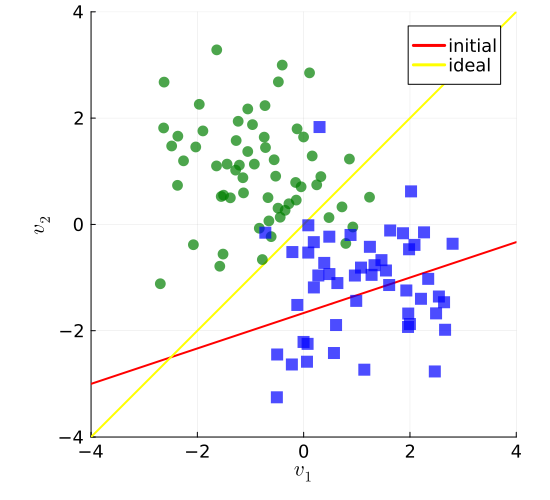
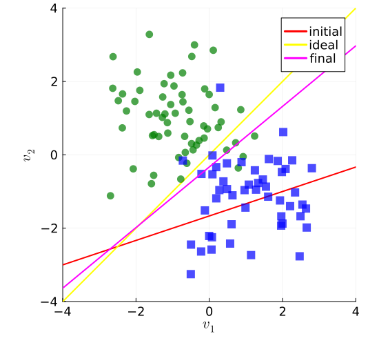
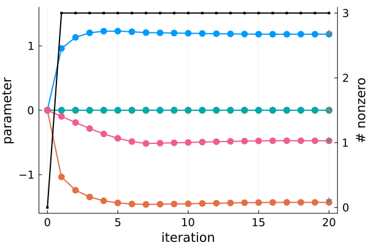
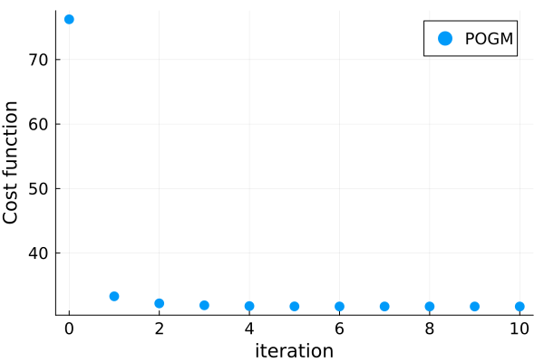
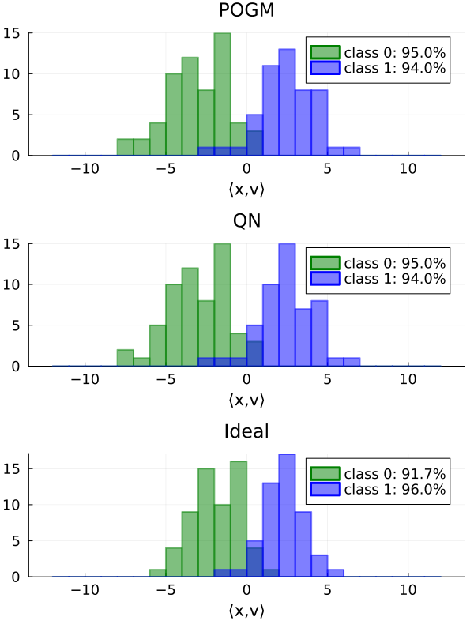

Sparse logistic regression with POGM
Binary classification via sparse (using 1-norm) logistic regression in Julia.
This page comes from a single Julia file: logistic-sparse.jl.
You can access the source code for such Julia documentation using the 'Edit on GitHub' link in the top right. You can view the corresponding notebook in nbviewer here: logistic-sparse.ipynb, or open it in binder here: logistic-sparse.ipynb.
Setup
Add the Julia packages used in this demo. Change false to true in the following code block if you are using any of the following packages for the first time.
if false
import Pkg
Pkg.add([
"ADTypes"
"InteractiveUtils"
"LaTeXStrings"
"LinearAlgebra"
"MIRTjim"
"MIRT"
"Optim"
"Plots"
"Random"
"Statistics"
])
endTell Julia to use the following packages. Run Pkg.add() in the preceding code block first, if needed.
using InteractiveUtils: versioninfo
using LaTeXStrings
using LinearAlgebra: dot, eigvals
using MIRTjim: prompt
using MIRT: pogm_restart
using Optim: optimize
import Optim # Options
using Plots: default, gui, savefig, twinx
using Plots: histogram!, plot, plot!, scatter, scatter!
using Random: seed!
using Statistics: mean
default(); default(markersize=6, linewidth=2, markerstrokecolor=:auto, label="",
tickfontsize=12, labelfontsize=14, legendfontsize=12, titlefontsize=16)The following line is helpful when running this file as a script; this way it will prompt user to hit a key after each figure is displayed.
isinteractive() ? prompt(:prompt) : prompt(:draw);Data
Generate synthetic data from two classes
if !@isdefined(yy)
seed!(0)
n0 = 60
n1 = 50
mu0 = [-1, 1]
mu1 = [1, -1]
v0 = mu0 .+ randn(2,n0) # class -1
v1 = mu1 .+ randn(2,n1) # class 1
nex = 0
if true # 2017-01-18
nex = 4 # extra dim (beyond the 2 shown) to make "larger scale"
v0 = [v0; rand(nex,n0)] # (2+nex, n0)
v1 = [v1; rand(nex,n1)] # (2+nex, n1)
end
v0 = [v0; ones(1,n0)] # (npar, n0) training data - with intercept
v1 = [v1; ones(1,n1)] # (npar, n1) training data - with intercept
M = n0 + n1 # how many samples
yy = [-ones(Int, n0); ones(Int, n1)] # (M) labels
vv = [v0 v1] # (npar, M) training data - with intercept
npar = 3 + nex # unknown parameters
end;Scatter plot and initial decision boundary
if !@isdefined(ps)
x0 = [-1; 3; rand(nex); 5]
v1p = range(-1,1,101) * 4
v2p_fun(x) = @. (-x[end] - x[1] * v1p) / x[2]
ps = plot(aspect_ratio = 1, size = (550, 500), legend = :topright,
xaxis = (L"v_1", (-4, 4), [-4 -1 0 1 4]),
yaxis = (L"v_2", (-4, 4), [-4 -1 0 1 4]),
)
plot!(v1p, v2p_fun(x0), color=:red, label="initial")
plot!(v1p, v1p, color=:yellow, label="ideal")
alpha = 0.7
scatter!(v0[1,:], v0[2,:], color = :green; alpha)
scatter!(v1[1,:], v1[2,:], color = :blue, marker = :square; alpha)
end
ps
prompt()
"""
model = model_setup(data, label, reg)
See `logistic_sparse` for arguments.
"""
function model_setup(data, label, reg)
all(in((+1,-1)), label) || throw(ArgumentError("label not ±1"))
#=
The gradient of the data-fit part of the cost function is
``∇ f(x) = A' \dot{h}.(A x)``,
and its Lipschitz constant is
``‖A‖₂² / 4``.
=#
pot(t) = log(1 + exp(-t)) # logistic
dpot(t) = -1 / (exp(t) + 1)
wpot0 = 1/4 # logistic curvature maximum
tmp = data * data' # (npar, npar) covariance
tmp = eigvals(tmp)
f_L = maximum(tmp) * wpot0 # Lipschitz
A = label .* data' # M × N matrix of features times labels
# Cost function
f_cost(x::AbstractVector) = sum(pot, A * x)
f_grad(x) = A' * dpot.(A * x) # gradient of F
F_cost(x::AbstractVector) = f_cost(x) + reg * sum(abs, @view x[1:(end-1)])
F_cost(x::AbstractMatrix) = F_cost.(eachcol(x)) # to handle arrays
# proximal operator
soft(z,c) = sign(z) * max(abs(z) - c, 0) # soft thresholding
g_prox(z, c) = [soft.((@view z[1:(end-1)]), reg * c); z[end]]
# subgradient of overall cost function (used for QN)
F_grad(x) = f_grad(x) + reg * [sign.(@view x[1:(end-1)]); 0]
return (; f_cost, f_grad, f_L, g_prox, F_cost, F_grad)
end
"""
xh = logistic_sparse(data, label, reg)
Perform sparse logistic regression
for binary `label`s
by minimizing the cost function
``
F(x) = f(x) + β ‖ x[1:end-1] ‖₁,
f(x) = 1_M' h.(A x)
``
where
``h(z) = log(1 + e^{-z})``
is the logistic loss function.
The regularizer
``‖ x[1:end-1] ‖₁``
does not penalize the last coefficient of `x`,
because that is the "bias/intercept" term.
Internally,
this function
forms the `M × N` matrix of features times labels
`A = yy .* data'`,
so the ``m``th row of ``A``
has already been multiplied
by the ``m``th binary class label that is ±1.
After optimizing ``x``,
the classifier is simply
``\text{sign}(⟨v,x⟩)``
where the feature vector ``v``
includes the intercept ``1``
as the last entry.
In
- `data` `N × M` where `N` is number of features
(including offset aka bias aka intercept ``1``)
- `label` vector of `M` labels ±1
- `reg` regularization parameter (β)
- `fun` see `pogm_restart`; default: count number of nonzero elements of x
- `niter` # of iterations (default 20)
Option
- `x0` initial guess of weight vector
Out
- `xh` minimizer of ``f(x)``
- `out` output of `pogm_restart`
"""
function logistic_sparse(
data::AbstractMatrix,
label::AbstractVector,
reg::Real;
how::Symbol = :pogm,
x0::AbstractVector = zeros(size(data, 1)),
fun::Function = (iter, xk, yk, is_restart) -> count(≠(0), xk),
niter::Int = 20,
)
model = model_setup(data, label, reg)
if how == :pogm
xh, out = pogm_restart(x0, model.F_cost, model.f_grad, model.f_L;
model.g_prox, fun, niter)
return xh, out
elseif how == :qn
opt = Optim.Options(
store_trace = false,
show_warnings = false,
extended_trace = false, # for trace of x
)
outq = optimize(model.F_cost, model.F_grad, x0, opt; inplace = false)
xq = outq.minimizer
return xq, outq
else
throw(ArgumentError("how $how"))
end
end;Find sparse regression weights using POGM
The resulting sparsity pattern is appropriate
if !@isdefined(xpogm)
reg = 2^2 # todo: use cross validation to select
niter = 20
xpogm, pogm_nnz = logistic_sparse(vv, yy, reg; niter, how = :pogm)
end;L-BFGS Quasi-Newton optimizer
Technically QN is inapplicable because the cost function is not differentiable, but we try it anyway.
The solution is "almost, but not quite" sparse, so a user-selected threshold would be needed.
if !@isdefined(xqn)
xqn, outq = logistic_sparse(vv, yy, reg; niter, how = :qn)
end;
xideal = [1; -1; zeros(5)] # due to data generation model
table1 = ["ideal" "fitted-POGM" "fitted-QN";
xideal round.(xpogm, sigdigits=3) round.(xqn, sigdigits=3)]8×3 Matrix{Any}:
"ideal" "fitted-POGM" "fitted-QN"
1.0 1.18 1.2
-1.0 -1.43 -1.4
0.0 -0.0 4.84e-17
0.0 -0.0 1.01e-16
0.0 -0.0 -5.72e-17
0.0 0.0 1.23e-16
0.0 -0.474 -0.472Compare final cost functions (POGM is slightly lower)
model = model_setup(vv, yy, reg)
tablem = [model.F_cost(xpogm), model.F_cost(xqn)]2-element Vector{Float64}:
31.705574735254046
31.710420260827817Plot decision boundaries
if true
xh = xpogm
psh = deepcopy(ps)
v2p = @. (-xh[end] - xh[1] * v1p) / xh[2]
plot!(psh, v1p, v2p, color = :magenta, label = "final")
end
psh
prompt()Rerun while saving iterates for plotting
if true
fun = (iter, xk, yk, is_restart) -> xk
_, outp = logistic_sparse(vv, yy, reg; niter, how = :pogm, fun)
end;Plot iterates; convergence is quite fast here
xps = hcat(outp...)'
ppi = plot(0:niter, xps, marker=:dot, # label = "POGM",
xlabel="iteration", yaxis = ("parameter", (-1.6, 1.6), -1:1) )
plot!(twinx(), 0:niter, Int.(pogm_nnz), color=:black, marker=:square,
ylabel="# nonzero", markersize = 2)
scatter!(fill(niter, npar), xqn, marker = :star, color = :gray)
prompt()Plot cost
ppc = plot(xaxis = ("iteration", (0,10), 0:2:10),
yaxis = ("Cost function",), widen=true)
scatter!(0:niter, model.F_cost(xps'), label = "POGM",)
prompt()Plot 1D separation
with accuracy labels
function _hist(x, title)
inprod0 = v0' * x
inprod1 = v1' * x
accuracy0 = round(count(<(0), inprod0) / n0 * 100, digits=1)
accuracy1 = round(count(>(0), inprod1) / n1 * 100, digits=1)
p = plot(xaxis=("⟨x,v⟩",); title)
bins = -12:12
alpha = 0.5
histogram!(inprod0; alpha, bins, color = :green, linecolor = :green,
label = "class 0: $accuracy0%")
histogram!(inprod1; alpha, bins, color = :blue, linecolor = :blue,
label = "class 1: $accuracy1%")
return p
end
p1h = _hist(xh, "POGM")
p1q = _hist(xqn, "QN")
p1i = _hist(xideal, "Ideal")
p1 = plot(p1h, p1q, p1i, layout=(3,1), size=(600,800))
This page was generated using Literate.jl.